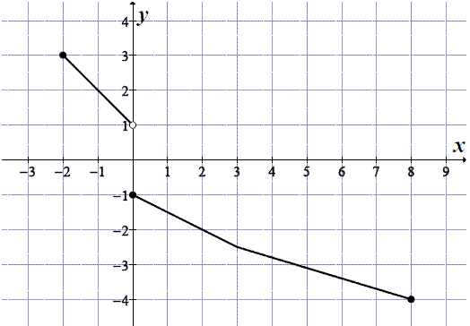
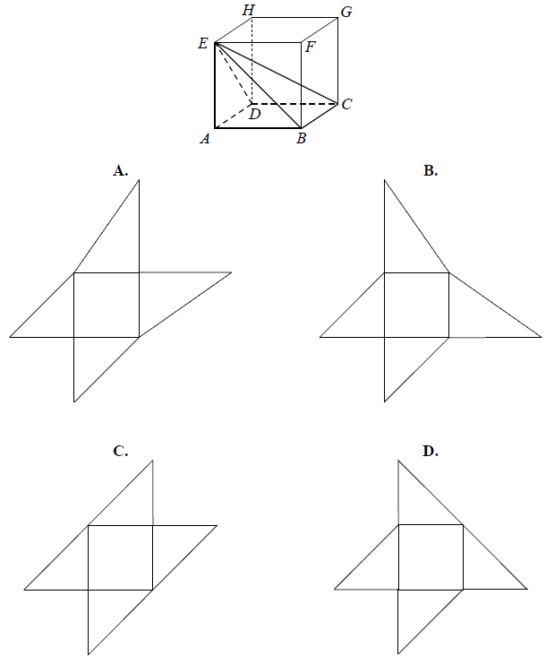

Matura 2012 marzec 7
Liczbę \(\sqrt{32}\) można przedstawić w postaci
A.\( 8\sqrt{2} \)
B.\( 12\sqrt{3} \)
C.\( 4\sqrt{8} \)
D.\( 4\sqrt{2} \)
D
Potęga \(\left ( \frac{y}{x} \right )^5\) (gdzie \(x\) i \(y\) są różne od zera)
jest równa
A.\( -5\cdot \frac{x}{y} \)
B.\( \left ( \frac{x}{y} \right )^{-5} \)
C.\( \frac{y^5}{x} \)
D.\( -\left ( \frac{x}{y} \right )^5 \)
B
Liczba \(\log_{3}\frac{1}{27}\) jest równa
A.\( -3 \)
B.\( -\frac{1}{3} \)
C.\( \frac{1}{3} \)
D.\( 3 \)
A
Wyrażenie \(\Bigl ||x| + 1\Bigl |\) dla \(x \lt 0\) jest równe
A.\( x+1 \)
B.\( x-1 \)
C.\( -x+1 \)
D.\( -x-1 \)
C
W pewnym sklepie ceny wszystkich płyt CD obniżono o \(20\%\). Zatem za dwie płyty
kupione w tym sklepie należy zapłacić mniej o
A.\( 10\% \)
B.\( 20\% \)
C.\( 30\% \)
D.\( 40\% \)
B
Wielomian \(4x^2 - 100\) jest równy
A.\( (2x-10)^2 \)
B.\( (2x-10)(2x+10) \)
C.\( 4(x-10)^2 \)
D.\( 4(x-10)(x+10) \)
B
Równanie \(\frac{x^2+36}{x-6}=0\)
A.nie ma rozwiązań
B.ma dokładnie jedno rozwiązanie
C.ma dokładnie dwa rozwiązania
D.ma dokładnie trzy rozwiązania
A
Największą liczbą całkowitą spełniającą nierówność \((4 + x)^2
\lt (x - 4)(x + 4)\) jest
A.\( -5 \)
B.\( -4 \)
C.\( -3 \)
D.\( -2 \)
A
Funkcja \(f(x) = 0{,}5x - 6\)
A.jest malejąca i jej wykres przechodzi przez punkt \((0, 6)\)
B.jest rosnąca i jej wykres przechodzi przez punkt \((0, 6)\)
C.jest malejąca i jej wykres przechodzi przez punkt \((0, -6)\)
D.jest rosnąca i jej wykres przechodzi przez punkt \((0, -6)\)
D
Liczby \(x_1, x_2\) są rozwiązaniami równania \(4(x + 2)(x - 6) = 0\) . Suma
\({x_1}^2 + {x_2}^2\) jest równa
A.\( 16 \)
B.\( 32 \)
C.\( 40 \)
D.\( 48 \)
C
Na rysunku przedstawiony jest wykres funkcji \(y = f(x)\).  Zbiorem wartości tej funkcji jest
A.\( \langle -4,3 \rangle \)
B.\( \langle -4,-1 \rangle \cup \langle 1,3 \rangle\)
C.\( \langle -4,-1 \rangle \cup ( 1,3 \rangle \)
D.\( \langle -5,6 \rangle \)
C
W trójkącie prostokątnym dane są kąty ostre: \(\alpha =27^\circ \) i \(\beta
=63^\circ \). Wtedy \(\frac{\cos \alpha +\sin \beta }{\cos \alpha }\) równa się
A.\( 1+\sin 63^\circ \)
B.\( \sin 63^\circ \)
C.\( 1 \)
D.\( 2 \)
D
Ciąg arytmetyczny \((a_n)\) jest określony wzorem \(a_n = -2n +
1\) dla \(n \ge 1\). Różnica tego ciągu jest równa
A.\( -1 \)
B.\( 1 \)
C.\( -2 \)
D.\( 3 \)
C
W ciągu geometrycznym \((a_n)\) dane są \(a_2=\frac{\sqrt{3}}{2}\) i \(a_3=-\frac{3}{2}\).
Wtedy wyraz \(a_1\) jest równy
A.\( -\frac{1}{2} \)
B.\( \frac{1}{2} \)
C.\( -\frac{\sqrt{3}}{2} \)
D.\( \frac{\sqrt{3}}{3} \)
A
Dane są punkty \(A = (6, 1)\) i \(B = (3, 3)\). Współczynnik kierunkowy prostej
\(AB\) jest równy
A.\( -\frac{2}{3} \)
B.\( -\frac{3}{2} \)
C.\( \frac{3}{2} \)
D.\( \frac{2}{3} \)
A
Pole prostokąta jest równe \(40\). Stosunek długości jego boków jest równy \(2:5\).
Dłuższy bok tego prostokąta jest równy
A.\( 10 \)
B.\( 8 \)
C.\( 7 \)
D.\( 6 \)
A
Dany jest trójkąt prostokątny o przyprostokątnych \(5\) i \(12\). Promień okręgu
opisanego na tym trójkącie jest równy
A.\( 12 \)
B.\( 8{,}5 \)
C.\( 6{,}5 \)
D.\( 5 \)
C
Dane są dwa okręgi o promieniach \(12\) i \(17\). Mniejszy okrąg przechodzi przez
środek większego okręgu. Odległość między środkami tych okręgów jest równa
A.\( 5 \)
B.\( 12 \)
C.\( 17 \)
D.\( 29 \)
B
Stożek powstał w wyniku obrotu trójkąta prostokątnego o przyprostokątnych \(13\) i
\(15\) wokół dłuższej przyprostokątnej. Promień podstawy tego stożka jest równy
A.\( 15 \)
B.\( 13 \)
C.\( 7{,}5 \)
D.\( 6{,}5 \)
B
Dany jest sześcian \(ABCDEFGH\). Siatką ostrosłupa czworokątnego \(ABCDE\) jest

B
Jeżeli \(A\) jest zdarzeniem losowym oraz \(A'\) jest zdarzeniem przeciwnym do
\(A\) i \(P(A)=5\cdot P(A')\), to prawdopodobieństwo zdarzenia \(A\) jest równe
A.\( \frac{4}{5} \)
B.\( \frac{1}{5} \)
C.\( \frac{1}{6} \)
D.\( \frac{5}{6} \)
D
Rozwiąż nierówność \(-3x^2 + 3x + 36 \ge 0\) .
\(x\in \langle -3; 4 \rangle \)
Funkcja \(f\) jest określona wzorem \(f(x)=\frac{2x-b}{x-9}\) dla \(x \ne 9\).
Ponadto wiemy, że \(f(4)=-1\). Oblicz współczynnik \(b\).
\(b=3\)
Podstawy trapezu prostokątnego mają długości \(6\) i \(10\) oraz tangens kąta
ostrego jest równy \(3\). Oblicz pole tego trapezu.
\(P=96\)
Trójkąt ABC przedstawiony na poniższym rysunku jest równoboczny, a punkty \(B, C,
N\) są współliniowe. Na boku \(AC\) wybrano punkt \(M\) tak, że \(|AM| = |CN|\). Wykaż, że
\(|BM| = |MN|\). 
Liczby \(64, x, 4\) są odpowiednio pierwszym, drugim i trzecim wyrazem malejącego
ciągu geometrycznego. Oblicz piąty wyraz tego ciągu.
\(a_5=\frac{1}{4}\)
Uzasadnij, że dla każdej dodatniej liczby całkowitej n liczba \(3^{n+2} - 2^{n+2} +
3^n - 2^n\) jest wielokrotnością liczby \(10\).
Tabela przedstawia wyniki uzyskane na sprawdzianie przez uczniów klasy III.
Oblicz średnią arytmetyczną i kwadrat odchylenia standardowego uzyskanych ocen.
| Oceny | \(6\) | \(5\) | \(4\) | \(3\) | \(2\) | \(1\) |
| Liczba uczniów | \(1\) | \(2\) | \(6\) | \(5\) | \(9\) | \(2\) |
\(\overline{x}=3 \), \(\sigma ^2=1{,}6\)
Rzucamy dwa razy symetryczną sześcienną kostką do gry. Oblicz prawdopodobieństwo
zdarzenia \(A\) polegającego na tym, że liczba oczek w drugim rzucie jest o \(1\) większa od liczby
oczek w pierwszym rzucie.
\(P(A)=\frac{5}{36}\)
Podstawą ostrosłupa \(ABCDS\) jest romb \(ABCD\) o boku długości \(4\). Kąt \(ABC\)
rombu ma miarę \(120^\circ \) oraz \(|AS|=|CS|=10\) i \(|BS|=|DS|\).
Oblicz sinus kąta nachylenia krawędzi \(BS\) do płaszczyzny podstawy ostrosłupa.
\(\sin \alpha =\sqrt{\frac{22}{23}}\)
Wyznacz równanie okręgu przechodzącego przez punkt \(A = (2, 1)\) i stycznego do
obu osi układu współrzędnych. Rozważ wszystkie przypadki.
\((x-1)^2+(y-1)^2=1\) lub \((x-5)^2+(y-5)^2=25\)
Z dwóch miast \(A\) i \(B\), odległych od siebie o \(18\) kilometrów, wyruszyli
naprzeciw siebie dwaj turyści. Pierwszy turysta wyszedł z miasta \(A\) o jedną godzinę
wcześniej niż drugi z miasta \(B\). Oblicz prędkość, z jaką szedł każdy turysta, jeżeli
wiadomo, że po spotkaniu pierwszy turysta szedł do miasta \(B\) jeszcze \(1{,}5\) godziny, drugi zaś
szedł jeszcze \(4\) godziny do miasta \(A\).
\(v_1=4\) km/h, \(v_2=3\) km/h